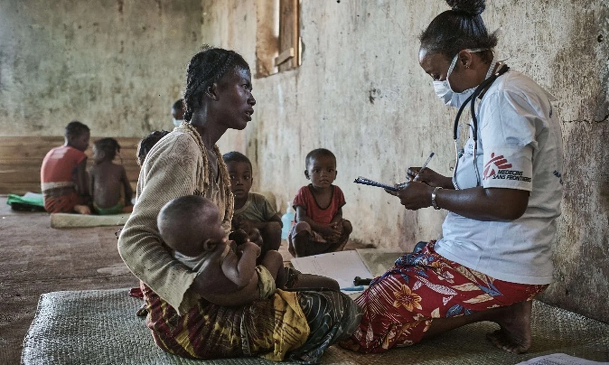

FGSM3 · DAY 3 GAME
Humanitarian Field Mission
24 Hours to Respond
You have joined a humanitarian medical response team. Before entering the field, you must understand the situation, recognise the language of displacement and access, and complete your operational briefing.
FIELD ASSIGNMENTMISSION 01FIELD BRIEFINGClearance pending
YOUR FIRST 24 HOURS
Mission 1 · Field Briefing
Complete all four briefings to unlock the next field assignment. Audio is optional: every spoken element also appears as text.
MISSION PROGRESS0 / 4
ACTIVE DESK
Mission not started
Choose Start Mission 1 to open your first briefing.
FIRST-TRY SCORE0
Awaiting field clearance
Your first task is Vocabulary Clearance.
SOURCE INTEL
The interview used in your worksheet
Emmanuel Massad of Doctors Without Borders speaks from southern Lebanon about displacement, overcrowded shelters, scarce basic needs and the difficulty of reaching people in unsafe areas.
Accessible briefing
The worksheet describes a humanitarian crisis in which hundreds of thousands of people have been displaced. Shelters are overcrowded, food, water and medical care are scarce, and access to some people in the south is too dangerous because of continuous strikes. The interview also raises concerns about the safety of medical teams and refugee camps.
MISSION 01 CLEARANCE
Complete all four activities to unlock Mission 2.
Your field briefing is not complete yet.
MISSION 02 · FIELD CLINIC
Triage Under Pressure
Identify what matters. Prioritise carefully. Communicate clearly.
Patients are arriving while access and supplies are under pressure. These fictional training scenarios practise English for prioritisation and contingency planning; they do not replace local clinical triage protocols.
MISSION 2 SCORE0 / 20first-attempt points
01Extract
Pick out the information a field handover really needs.
02Prioritise
Choose the clearest immediate priority from the information given.
03Plan
Respond to growing demand, access problems and delayed supplies.
04Communicate
Use zero, first and even if conditionals accurately.
MISSION 2 PROGRESS0 / 4
MISSION 02 · ACTIVE DESK
Triage desk locked
Complete Mission 1 to open this assignment.
ACTIVITY SCORE0
Mission 2 locked
Complete Field Briefing first.
MISSION 02 CLEARANCE
Triage Under Pressure is not cleared yet.
Complete all four Mission 2 activities.
MISSION 03 · ACCESS & LOGISTICS
Access Restricted
When the route changes, the response has to change too.
The Day 3 source describes people who cannot be reached because the situation is too dangerous, and vulnerable people for whom evacuation is especially difficult. Your task is to describe access limits accurately, recognise who may be left behind, adapt basic supplies planning and use even if to communicate limits without overpromising.
MISSION 3 SCORE0 / 18first-attempt points
01Report access
State clearly what can and cannot be reached from the information available.
02Protect inclusion
Recognise people whose mobility or health makes evacuation harder.
03Adapt supplies
Plan around blocked routes, overcrowding and delayed commodities.
04Communicate limits
Use first conditional and even if without making impossible promises.
MISSION 3 PROGRESS0 / 4
MISSION 03 · ACTIVE DESK
Access desk locked
Complete Mission 2 to open this assignment.
ACTIVITY SCORE0
Mission 3 locked
Complete Triage Under Pressure first.
MISSION 03 CLEARANCE
Access Restricted is not cleared yet.
Complete all four Mission 3 activities.
MISSION 04 · COMMUNICATION CLEARANCE
Radio Stress Check
Make the key syllable land clearly.
In long words, one syllable carries the main stress. This mission uses the word-stress patterns from your Day 3 worksheet and Presentation Check-in, then transfers them into short field and research messages.
MISSION 4 SCORE0 / 20first-attempt points
QUICK RULEOne syllable is stressed: louder and longer.
For words ending in -tion / -sion / -cian, your Presentation Check-in reminds you that the stress falls on the syllable immediately before the ending.
humanitarianemergencyevacuationcatastrophicpopulationcommoditiescoordinationcommunicationinfrastructuremalnutritiondehydrationsanitationvaccinationdeteriorationresuscitation
This larger bank comes from your Day 3 speaking task. The scored checkpoints below use stress patterns explicitly supplied in the worksheet answer key or Presentation Check-in.
MISSION 4 PROGRESS0 / 4
MISSION 04 · RADIO DESK
Communication desk locked
Complete Mission 3 to open this assignment.
ACTIVITY SCORE0
Radio Stress Check locked
Complete Access Restricted first.
MISSION 04 CLEARANCE
Radio Stress Check is not cleared yet.
Complete all four Mission 4 activities.
MISSION 05 · 24-HOUR PLANNING DESK
Emergency Contingency Plan
Plan for what may happen next.
A severe flooding scenario from your Day 3 worksheet: patient arrivals have increased sharply, more people are expected, roads are becoming difficult to use, and medical supplies may be delayed. Build a clear 24-hour response using zero conditional, first conditional and even if.
MISSION 5 SCORE0 / 20first-attempt points
WORKSHEET SCENARIOSevere flooding · next 24 hours
- Patient numbers have increased sharply.
- More people are expected to arrive.
- Several roads are becoming difficult to use.
- Medical supplies may be delayed.
MISSION 5 PROGRESS0 / 4
MISSION 05 · PLANNING DESK
Contingency desk locked
Complete Mission 4 to open this assignment.
ACTIVITY SCORE0
Mission 5 locked
Complete Radio Stress Check first.
MISSION 05 CLEARANCE
Emergency Contingency Plan is not cleared yet.
Complete all four Mission 5 activities.
MISSION 06 · HUMANITARIAN ETHICS BOARD
Make the case. Challenge it. Land it.
Your opinion is not being marked. Your argument is.
The Day 3 worksheet gives three difficult debate statements. This mission checks whether you can frame an issue, build a case, handle the other side and reach a nuanced position using the supplied debating language.
MISSION 6 SCORE0 / 20language & argument structure
“Humanitarian organisations like MSF should stay completely neutral and treat everyone the same — including fighters.”
“Rich countries have a duty to fund and staff humanitarian responses in conflict zones.”
“It is more effective to train and employ local health workers than to send international teams.”
⚖️ No opinion is marked right or wrong.The scored checkpoints assess rhetorical function, evidence language, concession, rebuttal and balanced conclusions.
MISSION 6 PROGRESS0 / 4
MISSION 06 · BOARDROOM
Ethics Board locked
Complete Mission 5 to open this assignment.
ACTIVITY SCORE0
Humanitarian Ethics Board locked
Complete the Emergency Contingency Plan first.
MISSION 06 CLEARANCE
Humanitarian Ethics Board is not cleared yet.
Complete all four argument stages.
UNSCORED SPEAKING TRANSFER
Your 60-second Board Brief
Your viewpoint is yours. Use the structure below to prepare one spoken response.
Complete Mission 6 to draw a board question.
Choose any position. The site does not grade your opinion.